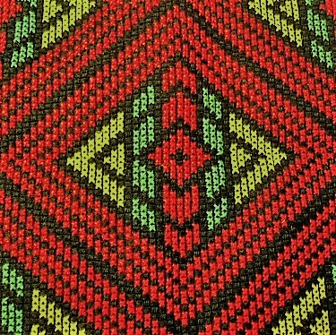

圖騰冊集

泰雅族的織布，因區域不同，而採用不同色系，但大抵喜用藍、黃、紅、黑、白來組成，利用植物的莖葉或果實染色再織入布匹裡，以簡單的顏色創造出滿目斑爛的熱鬧織品，雖然看起來形式簡樸，顏色的佈局卻艷麗耀目。由於分佈極廣支系眾多，泰雅族每個山頭區域的織布都表現的很獨特，例如顏色、圖騰紋樣，但織物的紋樣還是以菱紋及橫條為基本元素，加以組合變化，讓織布的人有依循的織路，凡織布的女人都認為服飾中多彩的橫線是通往祖先福地的彩虹橋，多變的菱紋，代表無數祖靈的眼睛。
泰雅族的織布，因區域不同，而採用不同色系，但大抵喜用藍、黃、紅、黑、白來組成，利用植物的莖葉或果實染色再織入布匹裡，以簡單的顏色創造出滿目斑爛的熱鬧織品，雖然看起來形式簡樸，顏色的佈局卻艷麗耀目。由於分佈極廣支系眾多，泰雅族每個山頭區域的織布都表現的很獨特，例如顏色、圖騰紋樣，但織物的紋樣還是以菱紋及橫條為基本元素，加以組合變化，讓織布的人有依循的織路，凡織布的女人都認為服飾中多彩的橫線是通往祖先福地的彩虹橋，多變的菱紋，代表無數祖靈的眼睛。